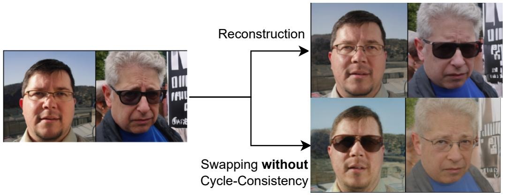

Figureure 3 · : Our 2-Stage training protocolFigure 3: Our 2-Stage training protocol. Left: Conditioning pipeline. An input image $x _ { 1 }$ is mapped to a latent u0 by a VAE encoder and to DINOv3 features (a). A cross-query module (b) produces semantic tokens T , and a small CNN (c) produces a color token $t _ { \mathrm { c o l } }$ . The concatenated tokens Z condition a U-Net diffusion model via cross-attention (d). Right: Training pipeline of our Common-Salient encoder. A CLS token is prepended to the input tokens. The encoder separates the common and salient parts, whose sum reconstructs the input. An anchor loss $\mathcal { L } _ { a n c h o r }$ ensures that the salient part has no information about background samples, while adversarial training purifies the common part. A cycle-consistency protocol ensures that counterfactuals (swaps) produce meaningful outputs.这张图概括 Diff-CA 的整体方法流程。阅读时先看模块之间传递的训练信号，再看作者如何把目标拆成可优化的子问题。

Figureure 21 · : Example of swapping with a model trained without cycle consistencyFigure 21: Example of swapping with a model trained without cycle consistency. Swapping $\hat { Z } _ { S }$ leads to major color changes from the reconstruction, indicating a hidden dependance between $\hat { Z } _ { C }$ and $\hat { Z } _ { C }$这张图来自论文 PDF 的结构化抽取。当前用于辅助理解 Diff-CA 的方法或实验，请结合正文精读段落一起看。